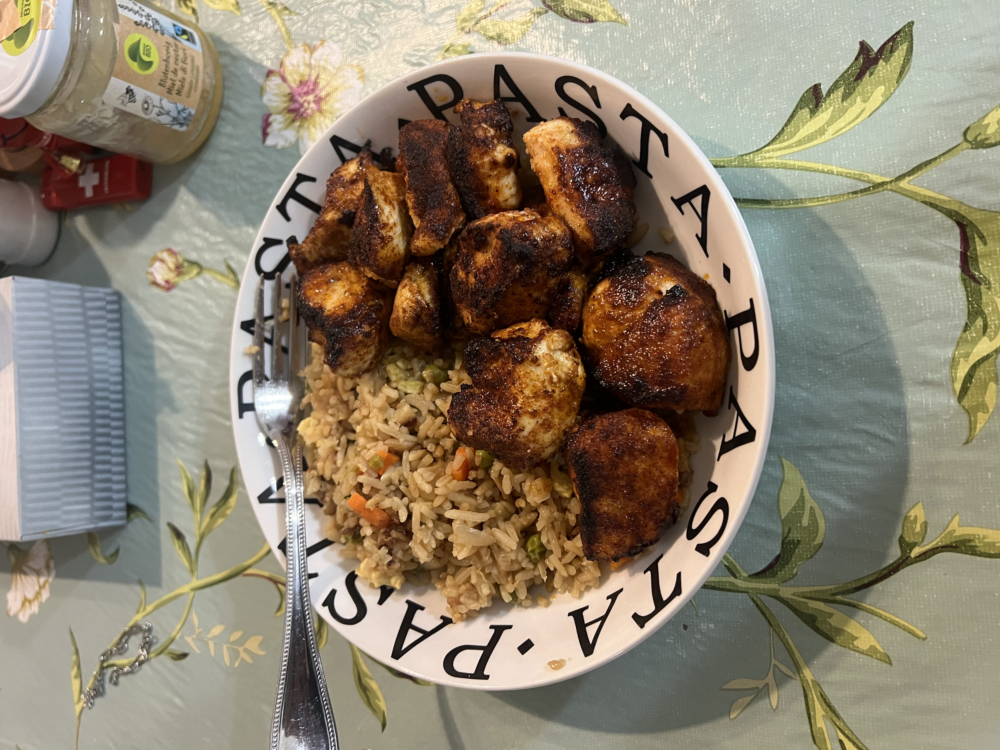

Home
Tangy Chicken

Description
Tangy Chicken is a lean and high protein recipe for making chicken. And it's super fast to make!
The picture includes tangy chicken with a side of fried rice (which is not part of the recipe). This
is normally how I eat my tangy chicken, however you can eat it with any side that you like! This recipe is
probably a mild to light medium on the spice level. I have a decent spice tolerance and find it mild
but if you cannot handle spice at all, just substitude the Chilli version of the Adobo Seasoning with
another one of the Adobo All Purpose Seaosnings.
(P.S the darkening on the chicken are not burned pieces, they're just the intense seasoning ( ͡° ͜ʖ ͡°))
Ingredients
- Chicken Breast (I used about 1lb in the overall batch displayed)
- Goya Adobo All Purpose Seasoning (Chilli version)
- Smoked Paprika Seasoning
Steps
(Make sure your chicken has been thawed out)
- Cut chicken into small cube / spherical like pieces (I tried
to make them larger than the standard nugget size so they are more juicy)
- Put Cut up chicken into a bowl and pour some oil on it.
- Get your hands dirty! Mix the oil onto all of the chicken with your hands or a spoon(if you're
trying to keep it demure). You don't need too much oil, you just want to make sure that oil is coating
the chicken. This helps the seasoning stick and helps during the cooking process.
- Sprinkle your Adobo All Purpose Seasoning generously, making sure that every little chicken has gotten
it's seasoning bath.
- Sprinkle your smoked paprika all over your adobod chicken! We want our chicken to be red, be generous with
your seasoning
- Once your chicken is covered in seasoning, make sure you flip all pieces and season the other side. We
don't want no two-faced flavor! That's not cool in this house, we make sure our food is seasoned in any
and every enviornment (the streets and in the sheets👹)
For the cooking process, I used an air fryer which I find best but if you don't have one you can also use
an oven!
- Set your cooking device to 400 degrees Farenheight and cook for 15 minutes!!